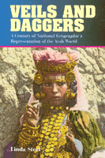

<body bgcolor="#FFFFFF" text="#000000" link="#0000FF" vlink="#CC0000" alink="#CC0000"><center><hr width="350" size="1" align="center" noshade>Critically unpacks <i>National Geographic</i>'s portrayal of the Arab World<hr width="350" size="1" align="center" noshade><p><a href="https://cdcshoppingcart.uchicago.edu/Cart/ChicagoBook.aspx?ISBN=9781566397513&&PRESS=temple" target="_top">Buy this book!</a> | <a href="https://cdcshoppingcart.uchicago.edu/Cart/Cart.aspx?PRESS=temple" target="_top">View Cart</a> | <a href="https://cdcshoppingcart.uchicago.edu/Cart/Cart.aspx?PRESS=temple" target="_top">Check Out</a></p><p></p></center><!--none//--><h1>Veils and Daggers</h1>
<H2>A Century of <u>National Geographic</u>'s Representation of the Arab World</H2>
<h3>Linda Steet</h3>
<P>cloth 1-56639-751-0 $70.50, Feb 00, <FONT COLOR=#990033>Out of Stock Unavailable</FONT>
<br>paper 1-56639-752-9 $32.95, Feb 00, <FONT COLOR=#990033>Available</FONT>
<BR> 224 pp
6x9
34&nbsp;halftones
</P><h3 align="center"><P><font color="#996633">The American Educational Studies Association (AESA) Critics� Choice Award,
2001</font></P>
</H3>
<BLOCKQUOTE><I>"</I>Veils and Daggers<I> is one of those rare books that is important, well-written, and has a sense of humor.... This book demonstrates the importance of theoretical eclecticism, empirical richness, and the judicial use of illustrative photos. It's a great read!"</I>
<br>&#151<b>Sari Knopp Biklen</b>, Laura and Douglas Meredith Professor, Chair, Cultural Foundations of Education, Syracuse University<I></I></BLOCKQUOTE>
<P><i>National Geographic</i> magazine is an American popular culture icon that, since its founding in 1888, has been on a nonstop tour classifying and cataloguing the peoples of the world. With more than ten million subscribers, <i>National Geographic</i> is the third largest magazine in America, following only <i>TV Guide</i> and <i>Reader's Digest</i>. <i>National Geographic</i> has long been a staple of school and public libraries across the country.
<p>In <i>Veils and Daggers</i>, Linda Steet provides a critically insightful and alternative interpretation of <i>National Geographic</i>. Through an analysis of the journal's discourses in Orientalism, patriarchy, and primitivism in the Arab world as well as textual and visual constructions of Arab men and women, Islam, and Arab culture, <i>Veils and Daggers</i> unpacks the ideological perspectives that have guided <i>National Geographic</i> throughout its history. Drawing on cultural, feminist, and postcolonial criticism, Steet generates alternative readings that challenge the magazine's claims to objectivity. In this fascinating journey, it becomes clear that neither text nor image in the magazine can be regarded as natural or self-evident and she artfully demonstrates that the act of representing others "inevitably involves some degree of violence, decontextualization, miniaturization, etc." The subject area known as Orientalism, she shows, is a man-made concept that as such must be studied as an integral component of the social, rather than the natural or divine world.
<p><i>Veils and Daggers</i> repositions and redefines <i>National Geographic</i> as an educational journal. Steet's work is an important and groundbreaking contribution in the area of social construction of knowledge, social foundations of education, educational media, and social studies as well as racial identity, ethnicity, and gender. Once encountered, readers of <i>National Geographic</i> will never regard it in the same manner again.
<BR>&nbsp;<h2>Excerpt</h2><P>Excerpt available at <a href="http://www.temple.edu/tempress">www.temple.edu/tempress</a></p>
<BR>&nbsp;<h2>Reviews</h2>
<p><I>"Steet's in-depth analyses are incisive, provocative, and multilayered. Accessible and theoretically rich, </I>Veils and Daggers<I> is highly valuable for scholars and students of cultural studies, ethnic studies, women's studies, journalism, and education."</I>
<br>&#151<b>Leslie Rebecca Bloom</b>, author of <I>Under the Sign of Hope: Feminist Methodology and Narrative Interpretation</I>
<BR>&nbsp;<h2>Contents</h2><P>
<p>List of Illustrations
<br>Acknowledgments
<br>Introduction
<br>1. What Would I Be Without You?
<br>2. "The Arab Is an Anachronism": <i>National Geographic</i>, 1888 Through the 1920s
<br>3. "The Fury and Excess": <i>National Geographic</i>, 1930s Through the 1940s
<br>4. "The Arabian Nightmares": <i>National Geographic</i>, 1950s Through the 1960s
<br>5. "Anonymous Women": <i>National Geographic</i>, 1970s Through the 1980s
<br>Afterword: The Bazaar and the Bizarre
<br>Notes
<br>Bibliography
<br>Index
</P><BR>&nbsp;<H2>About the Author(s)</H2>
<table><tr><td valign="top"><img src="/tempress/authors/1513_au.gif" height="90" width="75"></td><td width="100%" valign="middle"><p><B>Linda Steet</B> is Assistant Professor of Social Foundation of Education and Co-Coordinator of the Women's and Gender Studies Program at the University of Michigan, Flint.</P></td></tr></table>
<BR><H2>Subject Categories</H2>
<p><A HREF="/tempress/education.html" TARGET="_top">Education</a>
<BR><A HREF="/tempress/history.html" TARGET="_top">History</a>
<BR><A HREF="/tempress/sociology.html" TARGET="_top">Sociology</a>
</p>
<p align="center"><a href="https://cdcshoppingcart.uchicago.edu/Cart/ChicagoBook.aspx?ISBN=9781566397513&&PRESS=temple" target="_top">Buy this book!</a> | <a href="https://cdcshoppingcart.uchicago.edu/Cart/Cart.aspx?PRESS=temple" target="_top">View Cart</a> | <a href="https://cdcshoppingcart.uchicago.edu/Cart/Cart.aspx?PRESS=temple" target="_top">Check Out</a></p><p><font face="Arial" size="1"><a href="copyright.html" onMouseOver="window.status='Web Copyright Policy';return true;" onMouseOut="window.status=''" title="Web Copyright Policy">&copy;</a> 2015 <a href="http://www.temple.edu" target="new" onMouseOver="window.status='Link to Temple University home page';return true;" onMouseOut="window.status=''" title="Link to Temple University home page">Temple University</a>. All Rights Reserved. http://www.temple.edu/tempress/titles/1513_reg.html</font></p>